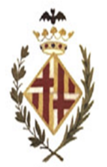
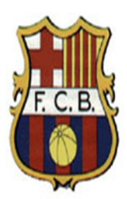
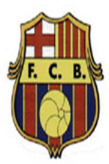
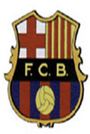
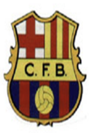
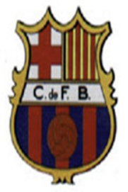
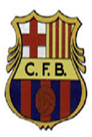
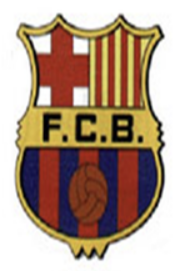
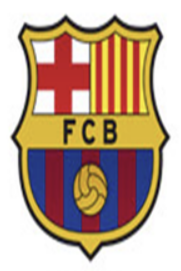

| 1899~1910 | 1910~1920 | 1920~1936 | 1936~1939 | 1939~1946 |
|---|---|---|---|---|
| 1946~1960 | 1960~1974 | 1974~1975 | 1975~2002 | 2002~현재 |
|  |  |  |  |  |
|  |  | |
 |  |
1899년 10월 22일, 바르셀로나에 거주하는 외국인들이 점점 널리 퍼지는 축구의 인기에 힘입어 스위스인 주안 감페르 를 주축으로 하여 클럽이 탄생하였다. 11월 29일 솔레 힘나시오에 스위스 오토 쿤슬, 욀터 윌드, 잉글랜드인 윌리엄 파손스, 독일인 오토 마이어, 카탈루냐인 루이스 드 오소, 바르토메우 테라다스, 에흐리크 두칼, 페레 카보트, 카를레스 푸올, 주제프 요베와 조안 감페르를 포함한 11명이 회의를 한 끝에 만장일치로 팀명을 Futbol Club Barcelona로 정하기로 했다. 창단 당시에는 초대 회장직에 영국인 월터 와일드를 선임했으며, 프로 축구단이 아닌 취미 축구단으로 창단 되었다. 창단 이후 1년 동안 보나노바 종합 운동장을 홈 구장으로 사용했다.
1900년, 카탈루냐 최초의 축구 대회인 1900-01 코파 마카야가 개최되면서 바르셀로나 역시 대회에 참가하였다. 총 6개 팀이 참가하여 리그 방식으로 진행될 예정이었지만 SD 산타하흐가 기권을 선언하면서 5개 팀의 리그 방식으로 진행되었고 승리 시 2점, 무승부 시 1점, 패배 시 0점의 승점 방식을 적용하여 6승 1무 1패 승점 13점을 달성하며 히스파니아 AC에 이어 2위로 대회를 마감하였다. 이 대회에서 조안 감페르가 31 득점을 기록하며 득점왕 타이틀을 차지하였다. 그리고 다음 시즌인 1901-02 시즌에는 6개 팀의 리그 방식으로 진행되었고 바르셀로나가 우승을 차지하며 역사상 첫 트로피를 차지하였다. 1902-03 시즌에는 클루브 에스파뇰에 이어 준우승을 차지했고 바르셀로나 주 컵 대회인 코파 바르셀로나에서 우승을 차지하며 첫 컵 트로피를 차지하였다. 이 시즌을 마지막으로 코파 마카야는 폐지되었다. 1903-04 시즌부터는 캄피오나트 데 카탈루냐가 새로 개최되었고 1904-05, 1908-09, 1909-10 시즌에 우승을 차지하였다.
1908년, 클럽 구성원은 38명에 불과했고 이에 대해 조안 감페르는 클럽을 더 크게 만들고 싶었다. 나머지 구성원의 동의를 받아 초대 회장으로 등극하였고 지난 10년 사이에 4번의 홈 구장 변화가 있었던 만큼 제대로 된 홈 구장의 필요성을 느끼면서 1909년 4월, 캄프 데 라 인두스트리아를 공식 홈 구장으로 선정했다. 감페르 회장은 1925년까지 총 5번 회장을 역임하며 팀의 기틀을 잡아 성장에 기여했다. 그리고 1910년에 제대로 된 축구단이 되기 위해서는 클럽 엠블럼이 있어야 한다고 판단하에 위 사진과 같은 엠블럼이 만들어졌다. 이후 이 엠블럼은 현재까지 사용되는 엠블럼의 배경이 되었다.
드디어 제대로 된 홈 구장이 생기고 난 뒤 현재는 코파 델 레이에 참가하여 1909-10, 1911-12, 1912-13에 우승을 차지하였다. 그리고 1910년부터 처음으로 국제 대회에 참가하기 시작했는데 카탈루냐, 바스크, 그리고 남부 프랑스 팀들이 참가한 피렌스 컵에 참가하여 1910, 1911, 1912, 1913까지 네 시즌 연속 우승을 차지하였다. 기존에 참가하던 카탈루냐 리그인 캄피오나트 데 카탈루냐에서도 10년 사이 5번의 우승을 차지하였다. 이렇게 클럽이 부상할 수 있던 이유는 바르셀로나 최초의 슈퍼 스타이자 현재까지 유일한 1군 아시아 출신 선수, 파울리노 알칸타라의 맹활약이 있었다. 1911-12 시즌부터 고작 만 15세의 나이로 바르셀로나로 합류 하여 최고의 활약을 보여주었고 1915-16 시즌까지 총 4시즌을 소화하고 보헤미안 SC로 이적하였다. 바르셀로나의 좋은 성적과 알칸타라의 등장으로 클럽의 인기는 점점 올라갔고 클럽에 대한 바르셀로나 시민들의 지지도 끝을 모르고 올라가면서 이 덕에 금전적인 도움 역시 받을 수 있었다. 홈 구장에 점점 많은 팬들이 몰리자 자리가 부족해졌고 그럼에도 경기를 놓치기 싫었던 팬들이 지붕과 담벼락에 걸터앉기 시작하면서 이때부터 엉덩이를 뜻하는 꾸레 라는 단어가 바르셀로나 팬을 지칭하는 별명이 되었다.
1920년대부터 바르셀로나는 파울리노 알칸타라, 주젭 사미티에르, 리카르도 사모라와 스타 선수들의 등장으로 더 큰 클럽으로 나아가기 시작했다. 덕분에 1922, 드디어 바르셀로나 자체 소유의 홈 구장 캄프 데 레스 코르트로 홈 구장을 이전하게 되었다. 22,000명의 정원을 목적으로 건축되었고 전체 입석으로 입장할 시 60,000명까지 수용할 수 있었다. 그리고 1929년 2월 12일, 라리가가 창설되었고 바르셀로나는 승점 25점으로 라리가 최초 우승 타이틀을 거머지게 되었다. 1930년 7월 30일, 조안 감페르가 자살을 하면서 향년 52세 나이로 사망하게 되었다. 주제프 수뇰이 제 2대 회장으로 부임하게 되었다.
그리고 1936년, 스페인 내전의 여파로 주제프 수뇰이 프랑코 군에게 총상을 당했고, 이 시기에 카탈루냐어 사용 자체가 금지되어 팀명이 Club de Futbol Barcelona라는 명칭으로 이름이 바뀌었다. 그리고 스페인 내전으로 인해 라리가를 진행할 수 없게 되었다.
하지만 다행히 1939년 6월 29일, 캄프 데 레스 코르트의 재개장이 허가되었으며 라리가가 재개되었다. 하지만 빼앗긴 팀명으로 인해 로고에 적힌 FCB를 사용하지 못하고 CFB로 바뀌게 된다.
1955년, 점점 커지는 클럽의 위상에 걸맞게 새로운 홈 구장이 필요하다는 많은 클럽 구성원들의 목소리가 나왔고 운영진들도 이를 받아들여 새로운 홈 구장을 디자인하 기 시작한다. 그리고 1957년 9월 24일, 2년 간의 건설 끝에 새로운 홈 구장 캄 노우가 개장한다. 당시 최대 수용 인원은 99,053명으로 전 세계 최대의 축구 전용 구장 이라는 타이틀을 얻게 된다. 새로운 홈 구장과 함께 바르셀로나는 승승장구하기 시작했으며 현재 UEFA 유로파 리그의 원조 격이라고 할 수 있는 인터-시티 페어스컵에 서 1957-58, 1959-60 시즌에 우승을 차지하게 되고 라리가에서도 1958-59, 1959-60 시즌에 2연속 우승을 차지하게 되었다.
1959-60 시즌 라리가 우승 이후 바르사는 30년에 걸친 최악의 암흑기를 겪었다. 처음에는 일시적인 것처럼 보였던 이 암흑기는 해가 지나가면서 끝이 보이지 않는 터 널이 되었다. 바르셀로나는 60년대 동안 라리가 우승을 단 한차례도 차지하지 못했으며, 1998-90시즌까지 30시즌 동안 라리가 우승이 단 두 차례에 불과했다. 끝없는 암흑기와 함께 팀의 몰락이 계속될 것이라고 예상되었지만 1971년에 리누스 미헬스 감독을 선임하고 1973년 8월 13일, 요한 크루이프를 최대 이적료로 영입했으며 크루이프는 곧바로 바르셀로나의 주장으로 선임되었다. 이렇게 감독 리누스 미헬스, 주장 요한 크루이프를 필두로 바르셀로나는 1973-74 시즌 라리가 타이틀도 다시 되찾아 오게 되었고, 크루이프는 1974년 발롱도르를 거머지게 되었다. 같은 해인 1974년, 바르셀로나는 창단 75주년을 맞이하여 공식 응원가를 처음으로 만들기 시작 하였다. 하우메 피카스, 주제프 마리아 에스피나스 작사에 마누엘 발스와 코랄 산트 조르디 작곡으로 Cant Del Barca를 만들었다. 그리고 스페인 정부가 민주주의 시 대로 접어들면서 모든 지방의 언어 사용이 자유화되면서 Club de Futbol Barcelona에서 다시 원 이름인 Futbol Club Barcelon를 되찾았고 로고 역시 CFB에서 FCB로 바뀔 수 있게 되었다.
1978년에 치러진 회장 선거에서 주젭 유이스 누녜스가 당선된 후 재정이 넉넉해졌고 이때부터 누녜스는 스타 플레이어들을 수집하기 시작했는데, 1982년 여름 이적 시장에 80년대 최고의 축구 스타, 디에고 마라도나를 영입했고, 이어서 게리 리네커, 베른트 슈스터, 안도니 수비사레타 같은 슈퍼스타들을 돈을 뿌려가며 영입했다. 동시에 누녜스는 우도 라텍, 세자르 루이스 메노티, 테리 베너블스, 루이스 아라고네스 등 명장등을 연이어 영입했으나 성과가 나오지 않았다. 하지만 이렇게 천문학적 인 돈을 뿌린 것에 비하면 바르사가 거둔 성과는 보잘 것 없었다. 1984-85 시즌에 라리가 우승을 거두기는 했지만 그것이 끝이었다. 이후에도 바르사의 암흑기는 1990 년까지 계속되었다.
1977-78 시즌을 끝으로 팀을 떠난 요한 크루이프가 10년 뒤에 감독으로 바르셀로나에 돌아왔다. 그는 선수단을 대폭 정리하여 베스트 일레븐 중에서 무려 10명을 갈아 치웠다. 누녜스 회장의 전폭적인 지원 약속을 바탕으로 크루이프는 기존 주전 선수들을 싸그리 정리하고 자신이 원하는 새로운 선수들을 대거 영입했다. 크루이프는 흐리 스토 스토이치코프, 미카엘 라우드루프, 로날트 쿠만, 게오르그 하지, 호마리우 등의 외국인 선수들을 대거 영입해 '드림팀'을 구축했다. 자신이 원했던 선수들로 스쿼드 를 전원 갈아엎은 크루이프는 이후 바르사에 자신이 원하는 축구를 덧입히는 작업을 했다. 그러나 크루이프의 드림팀은 초기 2년간 좋은 결과를 거두지 못했지만 1988-89 시즌에 위너스 컵 타이틀을 따면서 본격적인 궤도에 오르기 시작했다. 1989-90 시즌 코파 델 레이 우승을 차지했으며, 1990-91 시즌부터 1993-94 시즌까지 4시즌 연속 라 리가 우승 타이틀을 거머지게 되었다. 하지만 크루이프 감독과 라우드루프, 호마리우, 스토이치코프 등 스타 플레이어들이 심각한 대립을 하면서 팀 케미가 박살나기 시작했다. 그리고 1994-95 시즌부터 호마리우, 스토이치코프, 라우드루프 등 스타 플레이어들이 차례로 타 팀으로 이적하면서 '드림팀'은 와해되었다. 이렇게 스타 플레이 어들이 떠나자 크루이프와 바르셀로나도 함께 몰락했다. 1995-96 시즌까지 두 시즌 동안 계속 실패를 거둔 크루이프 감독은 결국 누녜스 회장과 갈등 끝에 팀을 떠났다.
1996년 크루이프를 경질한 누녜스 회장은 후임으로 바비 롭슨을 새 감독으로 영입했고, 동시에 호나우두와 루이스 엔리케를 영입했다. 이후 1999년, 바르셀로나는 기나 긴 시간 끝에 마침내 클럽 창단 100 주년을 기록하게 된다.